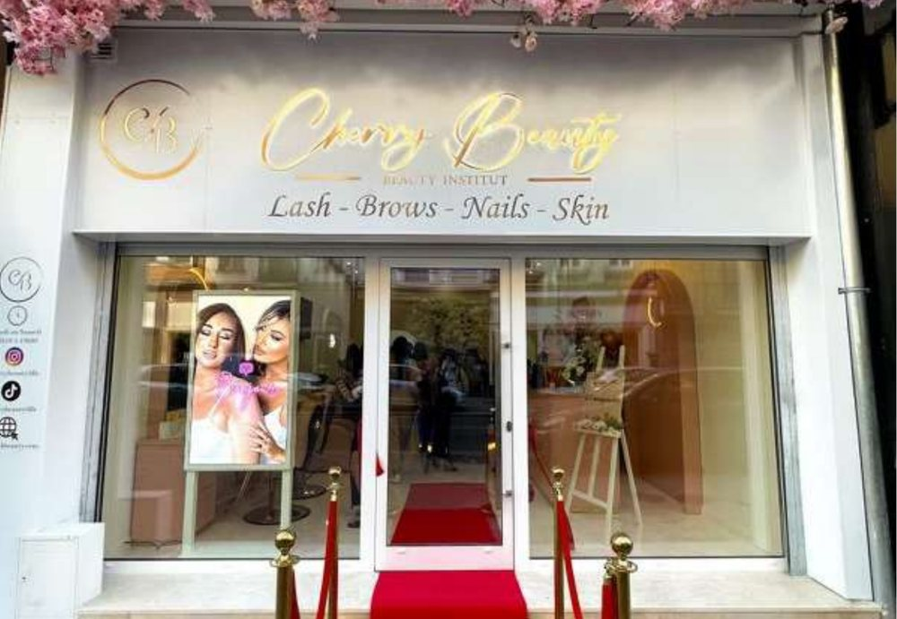

Écran vitrine pour pharmacie, parapharmacie et institut de beauté
Deux métiers voisins par la vitrine, opposés par le discours : l'un informe et rassure, l'autre donne envie. Le même matériel, deux façons de s'en servir.

Une pharmacie n'a pas à vendre, elle a à informer
C'est ce qui rend ce métier particulier. La communication des officines est encadrée par le code de la santé publique, et votre conseil de l'ordre reste l'arbitre de ce que vous affichez. Nous ne vous dirons donc jamais quoi diffuser : nous fournissons l'outil, vous restez maître du contenu.
Cela dit, le champ utile est large. Les campagnes de saison — allergies au printemps, protection solaire en été, vaccination à l'automne — la parapharmacie, les services de l'officine, la présence d'un orthopédiste ou d'une préparatrice spécialisée, les modalités de commande : tout cela intéresse vos clients et ne pose aucune difficulté.
La garde, quand le rideau est baissé
C'est l'usage qui revient systématiquement. Un écran allumé le soir et le week-end affiche la pharmacie de garde, vos horaires et le numéro à appeler, lisibles depuis le trottoir. Cela évite à quelqu'un de coller le nez à la vitre pour déchiffrer une feuille A4 scotchée à l'intérieur, et cela vous évite les appels hors horaires.
L'écran s'allume et s'éteint tout seul selon la plage que vous définissez. En période de garde, vous basculez le contenu depuis votre téléphone.
L'institut, c'est l'inverse : montrer le résultat
Dans un institut ou un centre d'esthétique, personne n'achète une prestation sur son nom. On achète un résultat qu'on a vu. C'est pour cette raison que la vitrine d'institut est l'une de celles où l'écran change le plus les choses : des photos de vos propres réalisations — ongles, cils, teint, épilation — remplacent un catalogue de prestations écrit en petit.
Deux précautions valent d'être rappelées. Les photos doivent être les vôtres, et vos clientes doivent avoir donné leur accord. Une image de banque se reconnaît immédiatement et produit l'effet inverse de celui recherché.
Remplir les créneaux vides de la semaine
Un institut qui a trois cabines vides le mardi après-midi perd ce chiffre d'affaires définitivement. Un écran de vitrine permet de le dire à la rue le matin même : une prestation courte, un tarif découverte, un créneau annoncé pour l'après-midi. Vous publiez en dix secondes, vous retirez le soir.
La même logique vaut pour les périodes qui se préparent : la fête des mères, les cartes cadeaux de fin d'année, la reprise de septembre. Ces opérations se programment à l'avance et se déclenchent toutes seules le jour venu.
L'écran d'attente, à l'intérieur
Dans les deux métiers, l'intérieur est un second emplacement souvent plus rentable que la vitrine. Un client qui patiente devant un comptoir regarde ce qui se présente à lui : c'est le meilleur moment pour présenter une gamme de parapharmacie, un forfait, une carte de fidélité ou un nouveau service.
Les écrans intérieurs sont dotés d'une dalle mate qui ne renvoie pas les spots, et démarrent à 49 € HT par mois. Beaucoup d'officines commencent par là avant d'équiper la vitrine.
Le budget
Un écran vitrine haute luminosité est à 139 € HT par mois en 32 ou 43 pouces sur 60 mois, 149 € en 49 pouces. Un écran intérieur démarre à 49 € HT par mois. Dans tous les cas, le matériel, le logiciel, une première boucle de dix visuels, l'installation, la formation et le SAV sont compris, déplacement inclus.
Le simulateur donne la mensualité selon la taille et la durée retenues.
Les questions propres à ces deux métiers
Une pharmacie a-t-elle le droit d'installer un écran en vitrine ?
L'écran est un support, il n'est pas réglementé en tant que tel : c'est son contenu qui l'est. La communication des officines est encadrée par le code de la santé publique, et votre conseil de l'ordre reste l'arbitre de ce que vous diffusez. En pratique, l'écran sert à la parapharmacie, aux services de l'officine, aux conseils de saison et aux informations pratiques.
L'écran peut-il rester allumé quand la pharmacie est fermée ?
Oui, et c'est l'un des usages les plus utiles : afficher la pharmacie de garde et vos horaires quand le rideau est baissé. L'allumage et l'extinction se programment, vous n'avez rien à faire le soir.
Pour un institut, peut-on diffuser des photos de résultats ?
Oui, à condition qu'il s'agisse de vos propres réalisations et que vos clientes aient donné leur accord. C'est d'ailleurs plus convaincant que des images de banque : une cliente reconnaît tout de suite ce qui a été fait dans votre cabine.
À voir aussi
Les métiers de la santé et de la beauté partagent des contraintes de vitrine avec ceux-ci.
Une vitrine qui informe même rideau baissé
Nous venons voir votre devanture, nous mesurons, et nous vous montrons ce que ça donnerait chez vous.
Demandez votre étude gratuite
Précisez votre activité — officine, parapharmacie ou institut — et la configuration de votre vitrine. Le contenu diffusé n'obéit pas aux mêmes règles dans les deux cas.
- Réponse sous 48 heures
- Nous venons voir votre devanture sur place
- Simulation de votre vitrine, sans engagement